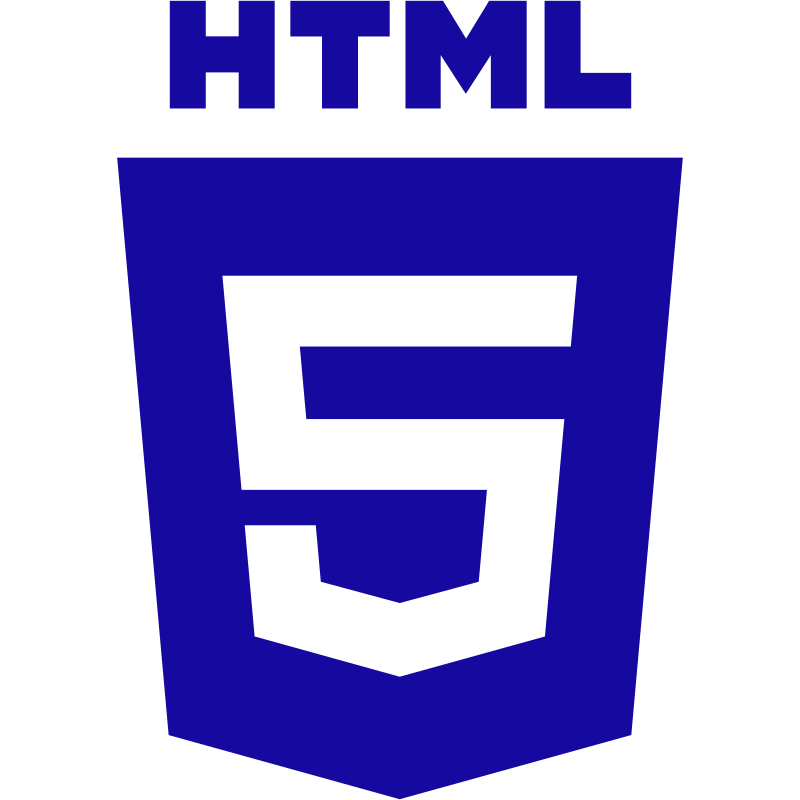
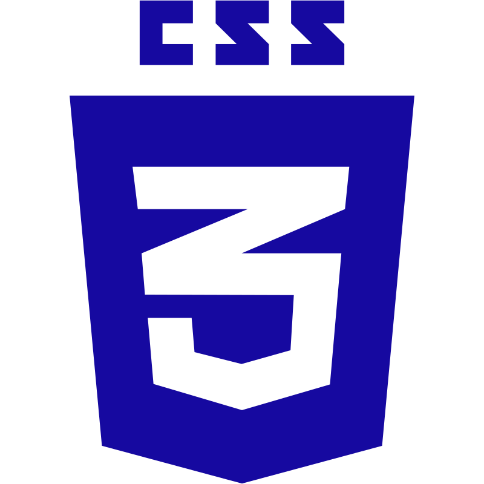
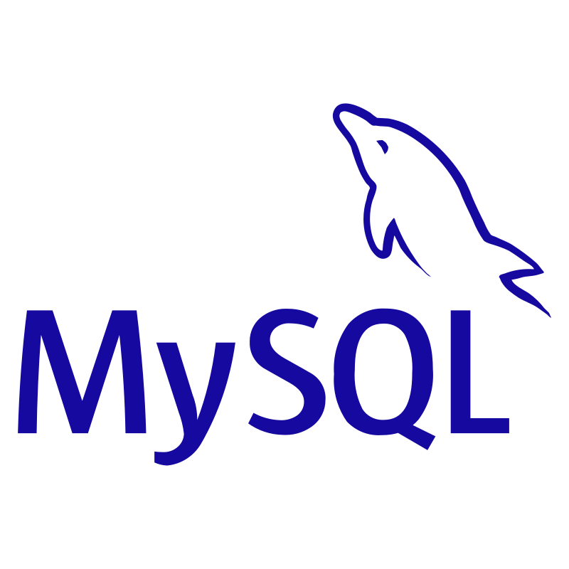
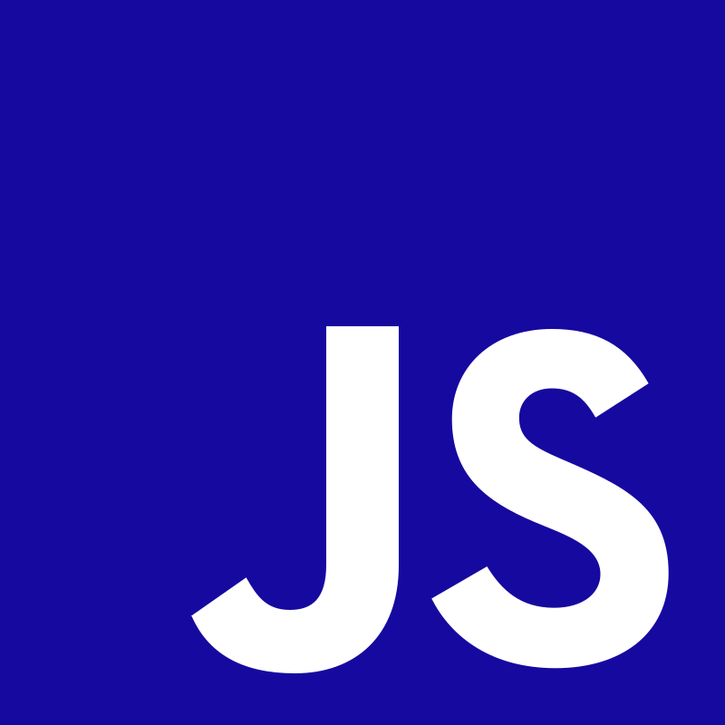
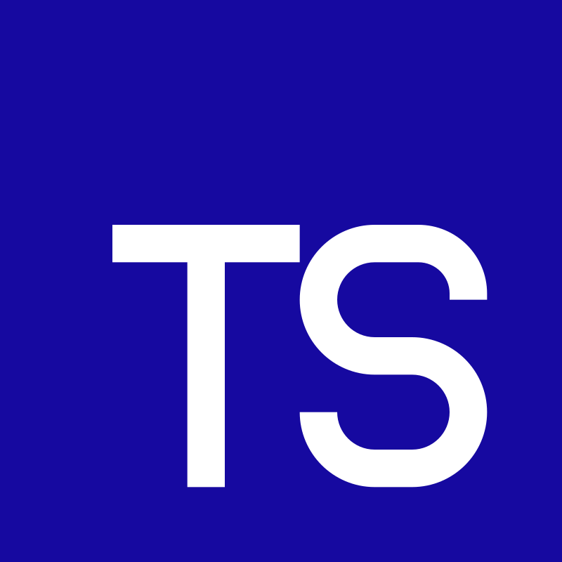
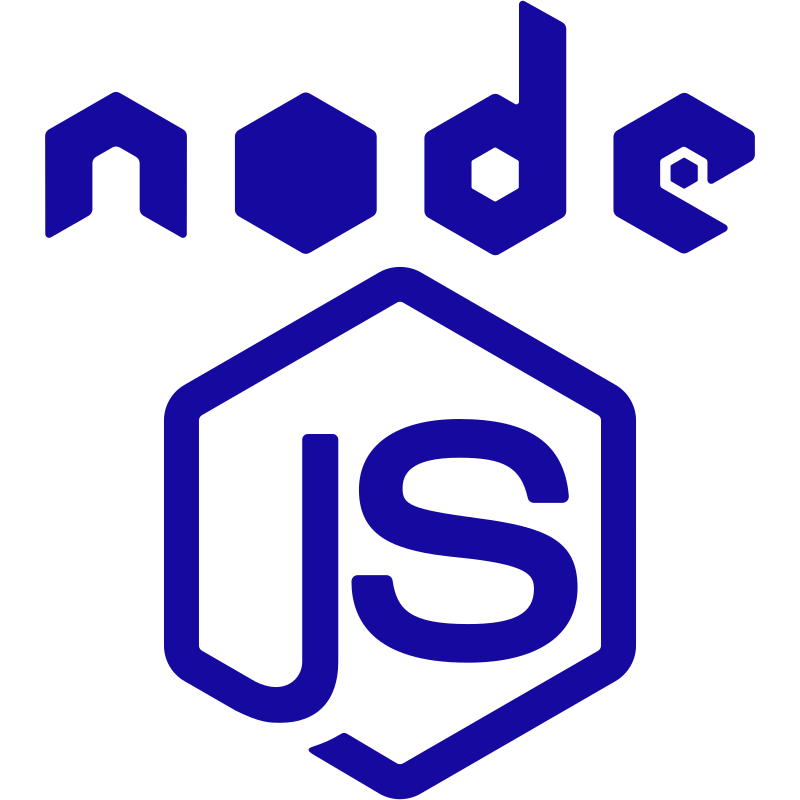
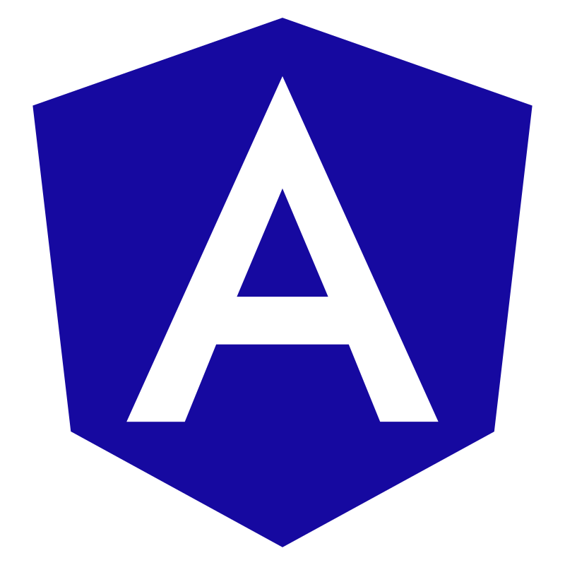
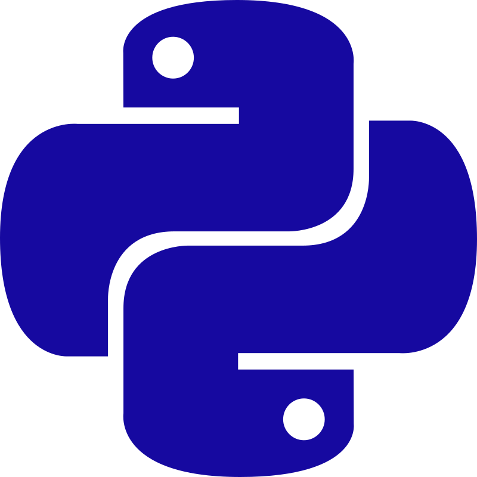

Sou um estudante com amplo conhecimento em uma variedade de tecnologias modernas, incluindo JavaScript, TypeScript, Python, PHP, HTML, CSS, React, Angular, Node.js, Supabase, MongoDB e MySQL. Minha experiência abrange todo o espectro do desenvolvimento web, permitindo-me criar páginas web altamente responsivas e interfaces de usuário intuitivas.
O Basico
 Bancos de dados
Linguagens de programação e frameworks
    